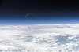

atmosphere
phenomenon

Source: Wikipedia
Wikipedia Page (Something wrong with this association? Let us know.)
Wikidata Page (Something wrong with this association? Let us know.)
Occurs in:
- atmosphere_rainfall_water__mass_flux
- atmosphere_air_water~vapor__specific_saturation
- atmosphere_bottom_air_water~vapor__partial_pressure
- atmosphere_dust~aerosol__reduction_of_transmittance
- atmosphere_aerosol_radiation~incoming~shortwave~absorbed__energy_flux
- atmosphere_aerosol_radiation~incoming~shortwave_absorption__absorptance
- atmosphere_aerosol_radiation~incoming~shortwave_reflection__reflectance
- atmosphere_aerosol_radiation~incoming~shortwave~reflected__energy_flux
- atmosphere_aerosol_radiation~incoming~shortwave_transmission__transmittance
- atmosphere_aerosol_radiation~incoming~shortwave~transmitted__energy_flux
- atmosphere_aerosol_radiation~outgoing~longwave_emission__emittance
- atmosphere_aerosol_radiation~outgoing~longwave~downward__energy_flux
- atmosphere_aerosol_radiation~outgoing~longwave~upward__energy_flux
- atmosphere_air_column_acetic-acid__mass-per-area_density
- atmosphere_air_column_acetonitrile__mass-per-area_density
- atmosphere_air_column_aerosol~dry_ammonium__mass-per-area_density
- atmosphere_air_column_alkanes__mass-per-area_density
- atmosphere_air_column_alkenes__mass-per-area_density
- atmosphere_air_column_alpha-hch__mass-per-area_density
- atmosphere_air_column_alpha-pinene__mass-per-area_density
- atmosphere_air_column_ammonia__mass-per-area_density
- atmosphere_air_column_clox-as-chlorine__mass-per-area_density
- atmosphere_air_column_hox-as-hydrogen__mass-per-area_density
- atmosphere_air_column_nox-as-nitrogen__mass-per-area_density
- atmosphere_air_column_water~vapor__leq_depth
- atmosphere_air_column_water~vapor__mass-per-area_density
- atmosphere_air__anomaly_of_pressure
- atmosphere_air__anomaly_of_temperature
- atmosphere_air__azimuth_angle_of_gradient_of_temperature
- atmosphere_air__convective_available_potential_energy
- atmosphere_air__east_derivative_of_temperature
- atmosphere_air__elevation_angle_of_gradient_of_temperature
- atmosphere_air__equivalent_potential_temperature
- atmosphere_air__equivalent_temperature
- atmosphere_air__heat_capacity_ratio
- atmosphere_air__increment_of_pressure
- atmosphere_air__increment_of_temperature
- atmosphere_air_isentropic-process__compressibility
- atmosphere_air_isothermal-process__compressibility
- atmosphere_air__magnitude_of_gradient_of_temperature
- atmosphere_air__mass-per-volume_density
- atmosphere_air_isobaric-process__mass-specific_heat_capacity
- atmosphere_air_isochoric-process__mass-specific_heat_capacity
- atmosphere_air__north_derivative_of_temperature
- atmosphere_air__potential_temperature
- atmosphere_air__static_pressure
- atmosphere_air__environmental_static_pressure_lapse_rate
- atmosphere_air__temperature
- atmosphere_air~dry_adiabatic-process__temperature_lapse_rate
- atmosphere_air__environmental_temperature_lapse_rate
- atmosphere_air__temperature_lapse_rate
- atmosphere_air~saturated_adiabatic-process__temperature_lapse_rate
- atmosphere_air__thermal_conductivity
- atmosphere_air__thermal_diffusivity
- atmosphere_air__thermal_inertia
- atmosphere_air__thermal_resistivity
- atmosphere_air_isobaric-process__volume-specific_heat_capacity
- atmosphere_air_isochoric-process__volume-specific_heat_capacity
- atmosphere_air__x_derivative_of_temperature
- atmosphere_air__y_derivative_of_temperature
- atmosphere_air__z_derivative_of_temperature
- atmosphere_air_carbon-dioxide~equilibrium__partial_pressure
- atmosphere_air_carbon-dioxide__partial_pressure
- atmosphere_air_carbon-dioxide__relative_saturation
- atmosphere_air~saturated_carbon-dioxide__partial_pressure
- atmosphere_air_flowing__azimuth_angle_of_bolus_velocity
- atmosphere_air_flowing__azimuth_angle_of_gradient_of_potential_vorticity
- atmosphere_air_flowing__azimuth_angle_of_gradient_of_pressure
- atmosphere_air_flowing__azimuth_angle_of_momentum
- atmosphere_air_flowing__azimuth_angle_of_velocity
- atmosphere_air_flowing__azimuth_angle_of_vorticity
- atmosphere_air_flowing__curl_of_velocity
- atmosphere_air_flowing__dynamic_pressure
- atmosphere_air_flowing__east_component_of_bolus_velocity
- atmosphere_air_flowing__east_component_of_momentum
- atmosphere_air_flowing__east_component_of_velocity
- atmosphere_air_flowing__east_component_of_vorticity
- atmosphere_air_flowing__east_derivative_of_potential_vorticity
- atmosphere_air_flowing__east_derivative_of_pressure
- atmosphere_air_flowing__east_east_component_of_reynolds_stress
- atmosphere_air_flowing__east_east_component_of_stress
- atmosphere_air_flowing__east_north_component_of_reynolds_stress
- atmosphere_air_flowing__east_north_component_of_stress
- atmosphere_air_flowing__east_up_component_of_reynolds_stress
- atmosphere_air_flowing__east_up_component_of_stress
- atmosphere_air_flowing__elevation_angle_of_bolus_velocity
- atmosphere_air_flowing__elevation_angle_of_gradient_of_potential_vorticity
- atmosphere_air_flowing__elevation_angle_of_gradient_of_pressure
- atmosphere_air_flowing__elevation_angle_of_momentum
- atmosphere_air_flowing__elevation_angle_of_velocity
- atmosphere_air_flowing__elevation_angle_of_vorticity
- atmosphere_air_flowing__gradient_of_pressure
- atmosphere_air_flowing__magnitude_of_bolus_velocity
- atmosphere_air_flowing__magnitude_of_bolus_vorticity
- atmosphere_air_flowing__magnitude_of_gradient_of_potential_vorticity
- atmosphere_air_flowing__magnitude_of_gradient_of_pressure
- atmosphere_air_flowing__magnitude_of_momentum
- atmosphere_air_flowing__magnitude_of_stress
- atmosphere_air_flowing__magnitude_of_velocity
- atmosphere_air_flowing__north_component_of_bolus_velocity
- atmosphere_air_flowing__north_component_of_momentum
- atmosphere_air_flowing__north_component_of_velocity
- atmosphere_air_flowing__north_component_of_vorticity
- atmosphere_air_flowing__north_derivative_of_potential_vorticity
- atmosphere_air_flowing__north_derivative_of_pressure
- atmosphere_air_flowing__north_north_component_of_reynolds_stress
- atmosphere_air_flowing__north_north_component_of_stress
- atmosphere_air_flowing__north_up_component_of_reynolds_stress
- atmosphere_air_flowing__north_up_component_of_stress
- atmosphere_air_flowing__obukhov_length
- atmosphere_air_flowing__potential_vorticity
- atmosphere_air_flowing__time_derivative_of_potential_vorticity
- atmosphere_air_flowing__total_pressure
- atmosphere_air_flowing__up_component_of_bolus_velocity
- atmosphere_air_flowing__up_component_of_momentum
- atmosphere_air_flowing__up_up_component_of_reynolds_stress
- atmosphere_air_flowing__up_up_component_of_stress
- atmosphere_air_flowing__x_component_of_bolus_velocity
- atmosphere_air_flowing__x_component_of_momentum
- atmosphere_air_flowing__x_component_of_velocity
- atmosphere_air_flowing__x_component_of_vorticity
- atmosphere_air_flowing__x_derivative_of_potential_vorticity
- atmosphere_air_flowing__x_derivative_of_pressure
- atmosphere_air_flowing__x_x_component_of_reynolds_stress
- atmosphere_air_flowing__x_x_component_of_stress
- atmosphere_air_flowing__x_y_component_of_reynolds_stress
- atmosphere_air_flowing__x_y_component_of_stress
- atmosphere_air_flowing__x_z_component_of_reynolds_stress
- atmosphere_air_flowing__x_z_component_of_stress
- atmosphere_air_flowing__y_component_of_bolus_velocity
- atmosphere_air_flowing__y_component_of_momentum
- atmosphere_air_flowing__y_component_of_velocity
- atmosphere_air_flowing__y_component_of_vorticity
- atmosphere_air_flowing__y_derivative_of_potential_vorticity
- atmosphere_air_flowing__y_derivative_of_pressure
- atmosphere_air_flowing__y_y_component_of_reynolds_stress
- atmosphere_air_flowing__y_y_component_of_stress
- atmosphere_air_flowing__y_z_component_of_reynolds_stress
- atmosphere_air_flowing__y_z_component_of_stress
- atmosphere_air_flowing__z_component_of_bolus_velocity
- atmosphere_air_flowing__z_component_of_momentum
- atmosphere_air_flowing__z_component_of_velocity
- atmosphere_air_flowing__z_component_of_vorticity
- atmosphere_air_flowing__z_derivative_of_potential_vorticity
- atmosphere_air_flowing__z_derivative_of_pressure
- atmosphere_air_flowing__z_integral_of_u_component_of_momentum
- atmosphere_air_flowing__z_integral_of_v_component_of_momentum
- atmosphere_air_flowing__z_z_component_of_reynolds_stress
- atmosphere_air_flowing__z_z_component_of_stress
- atmosphere_air_sediment~suspended_flowing__mass_concentration
- atmosphere_air_sediment~suspended_flowing__volume_concentration
- atmosphere_air_snow~suspended_flowing__mass_concentration
- atmosphere_air_snow~suspended_flowing__volume_concentration
- atmosphere_air_mercury~gaseous~divalent__molar_concentration
- atmosphere_air_mercury~gaseous~elemental__molar_concentration
- atmosphere_air_mercury~gaseous~monovalent__molar_concentration
- atmosphere_air_nitrogen~atomic__molar_concentration
- atmosphere_air_nmvoc~anthropogenic_carbon__molar_concentration
- atmosphere_air_nmvoc~biogenic_carbon__molar_concentration
- atmosphere_air_radiation__beer-lambert-law_attenuation_coefficient
- atmosphere_air_radiation__standard_refractive_index
- atmosphere_air_radiation_optical-path__length
- atmosphere_air_radiation~incoming~longwave_absorption__absorptance
- atmosphere_air_radiation~incoming~longwave_reflection__reflectance
- atmosphere_air_radiation~incoming~longwave_transmission__transmittance
- atmosphere_air_radiation~incoming~shortwave__energy_intensity
- atmosphere_air_water~vapor~bubble-point__temperature
- atmosphere_air_water~vapor~dew-point__temperature
- atmosphere_air_water~vapor~equilibrium__partial_pressure
- atmosphere_air_water~vapor~frost-point__temperature
- atmosphere_air_water~vapor__mass-per-volume_density
- atmosphere_air_water~vapor__mixing_ratio
- atmosphere_air_water~vapor__partial_pressure
- atmosphere_air_water~vapor__psychrometric_constant
- atmosphere_air_water~vapor__relative_saturation
- atmosphere_air~saturated_water~vapor__partial_pressure
- atmosphere_air_water~vapor__virtual_potential_temperature
- atmosphere_air_water~vapor__virtual_temperature
- atmosphere_ball_falling__speed
- atmosphere_ball_falling__terminal_speed
- atmosphere_bottom_air_canopy__brutsaert_emissivity_factor
- atmosphere_bottom_air_cloud__brutsaert_emissivity_factor
- atmosphere_bottom_air_bulk__latent_heat_aerodynamic_conductance
- atmosphere_bottom_air_bulk__latent_heat_transfer_coefficient
- atmosphere_bottom_air_bulk__momentum_aerodynamic_conductance
- atmosphere_bottom_air_bulk__momentum_transfer_coefficient
- atmosphere_bottom_air_bulk__sensible_heat_aerodynamic_conductance
- atmosphere_bottom_air_bulk__sensible_heat_transfer_coefficient
- atmosphere_bottom_air__emissivity
- atmosphere_bottom_air__mass-per-volume_density
- atmosphere_bottom_air_isobaric-process__mass-specific_heat_capacity
- atmosphere_bottom_air_bulk__neutral_latent_heat_transfer_coefficient
- atmosphere_bottom_air_bulk__neutral_momentum_transfer_coefficient
- atmosphere_bottom_air_bulk__neutral_sensible_heat_transfer_coefficient
- atmosphere_bottom_air__pressure
- atmosphere_bottom_air__static_pressure
- atmosphere_bottom_air__temperature
- atmosphere_bottom_air_carbon-dioxide~equilibrium__partial_pressure
- atmosphere_bottom_air_carbon-dioxide__partial_pressure
- atmosphere_bottom_air_carbon-dioxide__relative_saturation
- atmosphere_bottom_air~saturated_carbon-dioxide__partial_pressure
- atmosphere_bottom_air_flowing_bulk__richardson_number
- atmosphere_bottom_air_flowing__dynamic_pressure
- atmosphere_bottom_air_flowing__flux_richardson_number
- atmosphere_bottom_air_flowing__gradient_richardson_number
- atmosphere_bottom_air_flowing__log-law_displacement_length
- atmosphere_bottom_air_flowing__log-law_roughness_length
- atmosphere_bottom_air_flowing_at-reference-height__speed
- atmosphere_bottom_air_flowing_at-speed__reference_height
- atmosphere_bottom_air_flowing__total_pressure
- atmosphere_bottom_air_flowing__x_component_of_velocity
- atmosphere_bottom_air_flowing__y_component_of_velocity
- atmosphere_bottom_air_flowing__z_component_of_velocity
- atmosphere_bottom_air_flowing_buildings__log-law_roughness_length
- atmosphere_bottom_air_flowing_snowpack__log-law_roughness_length
- atmosphere_bottom_air_flowing_terrain__log-law_roughness_length
- atmosphere_bottom_air_flowing_vegetation__log-law_roughness_length
- atmosphere_bottom_air_flowing__log-law_heat_roughness_length
- atmosphere_bottom_air_advection__heat_energy_flux
- atmosphere_bottom_air_convection__heat_energy_flux
- atmosphere_bottom_air_diffusion__heat_energy_flux
- atmosphere_bottom_air_land__incoming_component_of_latent_heat_energy_flux
- atmosphere_bottom_air_land__incoming_component_of_sensible_heat_energy_flux
- atmosphere_bottom_air_land__net_latent_heat_energy_flux
- atmosphere_bottom_air_land__net_sensible_heat_energy_flux
- atmosphere_bottom_air_water~vapor_bulk__mass_aerodynamic_conductance
- atmosphere_bottom_air_water~vapor_bulk__mass_transfer_coefficient
- atmosphere_bottom_air_water~vapor~dew-point__temperature
- atmosphere_bottom_air_water~vapor~equilibrium__partial_pressure
- atmosphere_bottom_air_water~vapor~frost-point__temperature
- atmosphere_bottom_air_water~vapor__mass-per-volume_density
- atmosphere_bottom_air_water~vapor_bulk__neutral_mass_transfer_coefficient
- atmosphere_bottom_air_water~vapor__relative_saturation
- atmosphere_bottom_air~saturated_water~vapor__partial_pressure
- atmosphere_bottom_air_water~vapor_flowing__log-law_roughness_length
- atmosphere_air_carbon-dioxide__partial_pressure
- atmosphere_clouds_radiation~incoming~shortwave~absorbed__energy_flux
- atmosphere_clouds_radiation~incoming~shortwave_absorption__absorptance
- atmosphere_clouds_radiation~incoming~shortwave_reflection__reflectance
- atmosphere_clouds_radiation~incoming~shortwave~reflected__energy_flux
- atmosphere_clouds_radiation~incoming~shortwave_transmission__transmittance
- atmosphere_clouds_radiation~incoming~shortwave~transmitted__energy_flux
- atmosphere_clouds_radiation~outgoing~longwave_emission__emittance
- atmosphere_clouds_radiation~outgoing~longwave~downward__energy_flux
- atmosphere_clouds_radiation~outgoing~longwave~upward__energy_flux
- atmosphere_datum~vertical~tidal~mean-sea-level_air__static_pressure
- atmosphere_datum~vertical~tidal~mean-sea-level_air_flowing__dynamic_pressure
- atmosphere_datum~vertical~tidal~mean-sea-level_air_flowing__total_pressure
- atmosphere_graupel__mass-per-volume_density
- atmosphere_graupel_precipitation__duration
- atmosphere_graupel_precipitation__volume_flux
- atmosphere_hail__mass-per-volume_density
- atmosphere_hail_precipitation__duration
- atmosphere_hail_precipitation__volume_flux
- atmosphere_hydrometeor__diameter
- atmosphere_hydrometeor_falling__speed
- atmosphere_hydrometeor__mass
- atmosphere_hydrometeor__mass-per-volume_density
- atmosphere_hydrometeor__temperature
- atmosphere_hydrometeor_falling__terminal_speed
- atmosphere_hydrometeor__volume
- atmosphere_ice__mass-per-volume_density
- atmosphere_ice_precipitation__duration
- atmosphere_ice_precipitation__volume_flux
- atmosphere_radiation~incoming~shortwave~absorbed__energy_flux
- atmosphere_radiation~incoming~shortwave_absorption__absorptance
- atmosphere_radiation~incoming~shortwave_reflection__reflectance
- atmosphere_radiation~incoming~shortwave~reflected__energy_flux
- atmosphere_radiation~incoming~shortwave_transmission__transmittance
- atmosphere_radiation~incoming~shortwave~transmitted__energy_flux
- atmosphere_raindrop_falling__speed
- atmosphere_raindrop_falling__terminal_speed
- atmosphere_sleet__mass-per-volume_density
- atmosphere_sleet_precipitation__duration
- atmosphere_sleet_precipitation__volume_flux
- atmosphere_snow__mass-per-volume_density
- atmosphere_snow_precipitation__duration
- atmosphere_snow_precipitation__volume_flux
- atmosphere_top_air__temperature
- atmosphere_top_radiation~incoming~longwave__energy_flux
- atmosphere_top_radiation~incoming~shortwave__energy_flux
- atmosphere_top_radiation~incoming__energy_flux
- atmosphere_top_radiation~outgoing~longwave__energy_flux
- atmosphere_top_radiation~outgoing~shortwave__energy_flux
- atmosphere_top_radiation~outgoing__energy_flux
- atmosphere_top_surface_radiation~incoming~longwave__energy_flux
- atmosphere_top_surface_radiation~incoming~shortwave__energy_flux
- atmosphere_water_precipitation__domain_time_integral_of_leq_volume_flux
- atmosphere_rainfall_water__domain_time_integral_of_volume_flux
- atmosphere_snowfall_water__domain_time_integral_of_leq_volume_flux
- atmosphere_water_precipitation__domain_time_max_of_leq_volume_flux
- atmosphere_rainfall_water__geologic_time_average_of_volume_flux
- atmosphere_rainfall_water__globe_time_average_of_volume_flux
- atmosphere_icefall_water__leq_volume_flux
- atmosphere_icefall_water__mass-per-volume_density
- atmosphere_water__mass-per-volume_density
- atmosphere_water_precipitation__one-day_time_integral_of_leq_volume_flux
- atmosphere_water_precipitation__one-hour_time_integral_of_leq_volume_flux
- atmosphere_water_precipitation__one-month_time_integral_of_leq_volume_flux
- atmosphere_water_precipitation__one-year_time_integral_of_leq_volume_flux
- atmosphere_water_precipitation__duration
- atmosphere_water_precipitation__leq_volume_flux
- atmosphere_water_precipitation__mass_flux
- atmosphere_rainfall_water__volume_flux
- atmosphere_snowfall_water__leq_volume_flux
- atmosphere_snowfall_water__mass-per-volume_density
- atmosphere_air_water~vapor~dew-point__temperature
- atmosphere_air_water~vapor~frost-point__temperature
- atmosphere_air_water~vapor__partial_pressure
- atmosphere_air~saturated_water~vapor__partial_pressure
- earth_atmosphere__thickness
- earth_atmosphere__volume
- mars_atmosphere__thickness
- titan_atmosphere_methane_precipitation__leq_volume_flux
- atmosphere_air_water~vapor__max_of_relative_saturation
- atmosphere_air_water~vapor__min_of_relative_saturation
- atmosphere_bottom_air__average_of_temperature
- atmosphere_bottom_air__min_of_temperature
- atmosphere_bottom_air__max_of_temperature
- atmosphere_water_precipitation__leq_volume_flux
- atmosphere_water_precipitation__time_integral_of_leq_volume_flux
- atmosphere_air__one-day_max_of_temperature
- atmosphere_air__one-day_min_of_temperature
- atmosphere_water_precipitation__one-day_time_integral_of_leq_volume_flux
- atmosphere_water_precipitation__first_dekad_time_integral_of_leq_volume_flux
- atmosphere_water_precipitation__cumulative_anomaly_of_first_dekad_time_integral_of_leq_volume_flux
- atmosphere_water_precipitation__cumulative_z-score_of_first_dekad_time_integral_of_leq_volume_flux
- atmosphere_water_precipitation__second_dekad_time_integral_of_leq_volume_flux
- atmosphere_water_precipitation__cumulative_anomaly_of_second_dekad_time_integral_of_leq_volume_flux
- atmosphere_water_precipitation__cumulative_z-score_of_second_dekad_time_integral_of_leq_volume_flux
- atmosphere_water_precipitation__third_dekad_time_integral_of_leq_volume_flux
- atmosphere_water_precipitation__cumulative_anomaly_of_third_dekad_time_integral_of_leq_volume_flux
- atmosphere_water_precipitation__cumulative_z-score_of_third_dekad_time_integral_of_leq_volume_flux
- atmosphere_water_precipitation__one-month_time_integral_of_leq_volume_flux
- atmosphere_water_precipitation__cumulative_anomaly_of_one-month_time_integral_of_leq_volume_flux
- atmosphere_water_precipitation__cumulative_z-score_of_one-month_time_integral_of_leq_volume_flux
- atmosphere_water_precipitation__forecast_of_five-day_time_integral_of_leq_volume_flux
- atmosphere_water_precipitation__cumulative_anomaly_of_forecast_of_five-day_time_integral_of_leq_volume_flux
- atmosphere_water_precipitation__cumulative_z-score_of_forecast_of_five-day_time_integral_of_leq_volume_flux
- atmosphere_water_precipitation__forecast_of_ten-day_time_integral_of_leq_volume_flux
- atmosphere_water_precipitation__cumulative_anomaly_of_forecast_of_ten-day_time_integral_of_leq_volume_flux
- atmosphere_water_precipitation__cumulative_z-score_of_forecast_of_ten-day_time_integral_of_leq_volume_flux
- atmosphere_water_precipitation__forecast_of_fifteen-day_time_integral_of_leq_volume_flux
- atmosphere_water_precipitation__cumulative_anomaly_of_forecast_of_fifteen-day_time_integral_of_leq_volume_flux
- atmosphere_water_precipitation__cumulative_z-score_of_forecast_of_fifteen-day_time_integral_of_leq_volume_flux
- atmosphere_snowfall_water__mass_flux
- atmosphere_water_precipitation__leq_volume_flux
- atmosphere_soil_water_evapotranspiration__thornthwaite_potential_volume
- atmosphere_water_precipitation__standardized_wetness_index
- atmosphere_water_precipitation__volume_flux